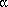
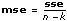

|
X contains all the observational data.
|
 |
Index contains the level to which the corresponding observation belongs.
|
 |
# of levels is the total number of levels.
|
 |
f is a ratio where f = msa/mse.
|
|
ssa is a measure of variation attributed to the factor.
|
|
sse is a measure of variation attributed to random fluctuation.
|
|
mse is the mean square quantity associated with sse. It is calculated by dividing sse by its own degree of freedom.
|
|
msa is the mean square quantity associated with ssa. It is calculated by dividing ssa by its degree of freedom.
|
|
tss is the total sum of squares, which is a measure of the total variation of the data from the overall population mean. It is calculated using tss = ssa + sse.
|
 |
error returns any error or warning from the VI. You can wire error to the Error Cluster From Error Code VI to convert the error code or warning into an error cluster.
|
|
sig A, given a particular f, is the probability that you will get a value larger than f when sampling from an F distribution.
|
In the one-way analysis of variance, the VI tests whether the level of the factor has an effect on the experimental outcome.
1D ANOVA Factors and Levels
A factor is a basis for categorizing data. For example, if you count the number of sit-ups individuals can do, one basis of categorization is age. For age, you might have the following levels.
| Level 0 | 6 years old to 10 years old |
| Level 1 | 11 years old to 15 years old |
| Level 2 | 16 years old to 20 years old |
Now, suppose that you make a series of observations to see how many sit-ups people can do. If you take a random sampling of five people, you might find the following results.
| Person 1 |
8 years old (level 0) |
10 sit-ups |
| Person 2 |
12 years old (level 1) |
15 sit-ups |
| Person 3 |
16 years old (level 2) |
20 sit-ups |
| Person 4 |
20 years old (level 2) |
25 sit-ups |
| Person 5 |
13 years old (level 1) |
17 sit-ups |
Notice that you have made at least one observation per level. To perform an analysis of variance, you must make at least one observation per level.
To perform the analysis of variance, you specify an array X of observations, with values 10, 15, 20, 25, and 17. The array Index specifies the level (or category) to which each observation applies. In this case, Index has the values 0, 1, 2, 2, and 1. Finally, there are three possible levels, so you pass in a value of 3 for the # of levels parameter.
1D ANOVA Statistical Model
Performing the analysis of variance, you express each experimental outcome as the sum of three parts. Let xim be the mth observation from the ith level. Then each observation is written
xim = µ + i +  im
im
where µ is a standard effect, called the overall mean.
i is the effect of the ith level of the factor, which is the difference between the mean of the ith level i and the overall mean
µ(µi) = µ + i
and im is a random fluctuation.
1D ANOVA Hypothesis
This VI tests the hypothesis that i = 0 for i = 0, 1, �, k – 1, where k is # of levels. In other words, this hypothesis, referred to as the null hypothesis, states that no level affects the experimental outcome and then looks for evidence to the contrary.
1D ANOVA Assumptions
Assume that the populations of measurements at each level are Normally distributed with mean µi and variance  A2, and assume that i sum to zero. Finally, assume that for each i and m, im is Normally distributed with mean 0 and variance A2.
A2, and assume that i sum to zero. Finally, assume that for each i and m, im is Normally distributed with mean 0 and variance A2.
1D ANOVA General Method
This VI computes the total sum of squares, tss, which is a measure of the total variation of the data from the overall population mean.
tss consists of two parts: ssa, a measure of variation attributed to the factor, and sse, a measure of variation attributed to random fluctuation. In other words,
tss = ssa + sse.
The VI computes the two mean square quantities msa and mse from ssa and sse by dividing ssa and sse by their own degrees of freedom. The larger msa is relative to mse, the more significant effect the factor has on the experimental outcome.
In particular, if the null hypothesis is true, then the ratio f, f = msa/mse, is taken from an F distribution with k – 1 and n – k degrees of freedom, from which you can calculate probabilities. Given a particular f, sigA is the probability that you get a value larger than f when sampling from this distribution.
Testing the 1D ANOVA Hypothesis
Determine when to reject the null hypothesis by deciding how likely you want it to be that you mistakenly reject the null hypothesis. This is the level of significance, a common choice is 0.05. The output sigA is compared to the chosen level of significance to determine whether to accept or reject the null hypothesis. If sigA is less than the chosen level of significance, reject the null hypothesis. If you reject the null hypothesis, you must acknowledge that at least one level has some effect on the experimental outcome.
1D ANOVA Formulas
Let xim = the mth observation made at the ith level for m = 0, 1, �, ni – 1 and i = 0, 1, �, k – 1, where ni is the number of observations at the ith level and k = # of levels.

then

SigA = Prob{Fk – 1, n – k > f}
Fk – 1, n – k
is the F distribution with k – 1 and n – k degrees of freedom.
Refer to the Unbalanced ANOVA on Rainfall Data VI in the labview\examples\Mathematics\Probability and Statistics directory for an example of using the 1D ANOVA VI.
 Open example
Open example  Find related examples
Find related examples
 Add to the block diagram
Add to the block diagram